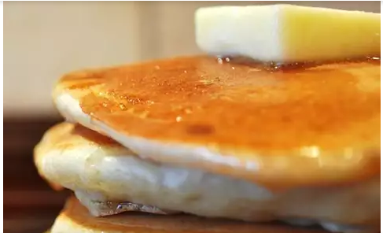

Pancakes

A pancake (or hot-cake, griddlecake, or flapjack) is a flat cake, often thin
and round, prepared from a starch-based batter that may contain eggs,
milk and butter and cooked on a hot surface such as a griddle or frying
pan, often frying with oil or butter. It is a type of batter bread.
Pancakes are amazing after you heal from wisdom tooth extraction surgery.
Since they can be soft/fluffy when cooked correctly you can eat them usually
the second or third week. They tast extra good at that point in time because
you wouldn't have eaten anything solid for a period of time while you heal.
Ingredients
- 1 Cup All Purpose Flour
- 2 Tablespoons Sugar
- 2 Teaspoons Baking Powder
- 1/2 Teaspoon Salt
- 1 Cup Milk
- 2 Tablespoons Unsalted Butter (Melted) or Vegetable Oil
- 1 Large Egg
- 1 Tablespoon Vegetable Oil
- Assorted Toppings:
- Butter
- Mapple Syrup
- Sugar
- Honey
- Whip Cream
- Chocolate Syrup
Directions
- Preheat oven to 200 degrees; have a baking sheet or heatproof platter
ready to keep cooked pancakes warm in the oven. In a small bowl, whisk
together flour, sugar, baking powder, and salt; set aside.
- In a medium bowl, whisk together milk, butter (or oil), and egg. Add
dry ingredients to milk mixture; whisk until just moistened (do not overmix;
a few small lumps are fine).
- Heat a large skillet (nonstick or cast-iron) or griddle over medium. Fold a
sheet of paper towel in half, and moisten with oil; carefully rub skillet
with oiled paper towel.
- For each pancake, spoon 2 to 3 tablespoons of batter onto skillet, using the
back of the spoon to spread batter into a round (you should be able to fit 2
to 3 in a large skillet).
- Cook until surface of pancakes have some bubbles and a few have burst, 1 to 2 minutes.
Flip carefully with a thin spatula, and cook until browned on the underside,
1 to 2 minutes more. Transfer to a baking sheet or platter; cover loosely with
aluminum foil, and keep warm in oven. Continue with more oil and remaining
batter. (You'll have 12 to 15 pancakes.) Serve warm, with
desired toppings.